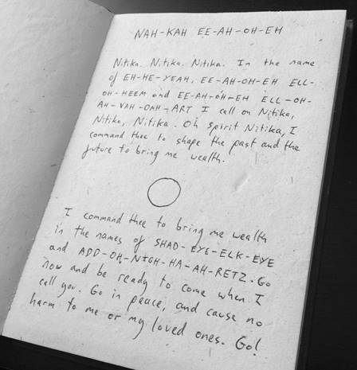

In the following empowering ritual, you will use the name Nitika. There are two main ways to pronounce this, so use the one that feels easiest to you.
在接下来的赋能仪式中，你将使用尼蒂卡（Nitika）这个名字。主要有两种发音方式，选择你觉得最容易的那一种。
One way is to say KNEE-TEA-CAR, where you are literally using the English words knee, tea, and car.
一种方式是说 KNEE-TEA-CAR（克尼-提-卡尔），你实际上是在使用英文单词 knee（膝盖）、tea（茶）和 car（汽车）。
A second pronunciation is KNEE-TEA-CAH. Again, you use knee and tea. CAH sounds like calm without the lm. (You can think of CAH as a sound that rhymes with ma or pa. So CAH is just like ma but with a c instead of an m.)
第二种发音是 KNEE-TEA-CAH（克尼-提-卡）。同样，你使用 knee（克尼）和 tea（提）。CAH（卡）听起来像 calm（平静）去掉 lm。（你可以把 CAH（卡）想象成一个与 ma（妈）或 pa（爸）押韵的音。所以 CAH（卡）就像 ma（妈）但用 c 代替 m。）
For the rest of this book, I will use KNEE-TEA-CAH, but you can substitute it with the other pronunciation if you prefer. It will work.
在本书的其余部分，我将使用 KNEE-TEA-CAH（克尼-提-卡），但如果你喜欢，也可以用另一种发音代替。它会起作用。
You should also learn to vibrate the name, which is just a fancy occult term for letting the word really rumble out of you. When you speak, let the name come up from your belly, through the back of your throat. Make it feel as though you are giving birth to the word as you speak, rather than just whispering it.
你还应该学习振动这个名字，这只是一个花哨的神秘学术语，意思是让这个词真正地从你身体里发出隆隆声。当你说话时，让这个名字从你的腹部升起，通过你的喉咙后部。让它感觉像是你在说话时正在孕育这个词，而不仅仅是低声耳语。
If this sounds puzzling, imagine how an actor would say a magickal name in a horror movie – they would let it rumble from deep within, almost gurgling through their throat in a deep roar. Weirdly enough, Hollywood has it right, and it helps to be this dramatic.
如果这听起来令人困惑，想象一下演员在恐怖电影中会如何说出一个魔法名字——他们会让它从内心深处发出隆隆声，几乎是在喉咙里发出低沉的咆哮声，咕噜作响。奇怪的是，好莱坞的做法是对的，这样做确实有帮助。
Whatever type of voice you have, try to let the name of Nitika rumble through your throat. By vibrating the name in this way, it has much more power. The same is true of all magickal Words of Power used in this book. The rest of the ritual can be spoken normally, but all the words in capitals should be vibrated as above.
无论你的嗓音如何，试着让尼蒂卡的名字在你的喉咙里发出隆隆声。通过这种方式振动名字，它具有更大的力量。本书中使用的所有魔法力量之语也是如此。仪式的其余部分可以正常说出，但所有大写的词语都应该如上所述振动。
If you need to work in private, you can whisper the words, or even say them in your head, but if you do, you must imagine them rumbling out of you loudly, to the very ends of the universe.
如果你需要在私下进行，你可以低声说出这些词，甚至在脑海中默念，但如果你这样做，你必须想象它们从你身体里大声地隆隆作响，直到宇宙的尽头。
When you feel ready, find a time to be alone and calm your thoughts. Have a pen ready.
当你觉得准备好了，找一个独处的时间，让你的思绪平静下来。准备好一支笔。
Do not think about your needs or money. Instead, spend some time thinking about something that you enjoy or like. Just ponder that for a while, breathing easily. Then, without giving much thought to what you're doing, perform the following steps.
不要思考你的需求或金钱。相反，花些时间思考一些你喜欢或享受的事情。就这样沉思一会儿，轻松地呼吸。然后，不要过多思考你在做什么，执行以下步骤。
1. Open your Cashbook and vibrate the words: NAH-KAH EE-AH-OH-EH.
1. 打开你的现金簿，振动念诵：纳-卡 伊-啊-哦-诶 (NAH-KAH EE-AH-OH-EH)。
2. Close the Cashbook and stare at the center of the sigil on its front cover. Do not stare hard, but let your gaze move over the sigil and consider that this is a key that unlocks access to the spirit Nitika.
2. 合上现金簿，凝视其封面上符印的中心。不要使劲盯着，而是让你的目光在符印上移动，并思考这是一把解锁与灵体尼蒂卡连接的钥匙。
3. Still looking at the sigil, vibrate the name Nitika (KNEE-TEA-CAH) eleven times. Count on your fingers if you have to. Make sure that minimal effort goes into counting, and most of your effort goes into feeling the name in your throat and drinking in the sigil with your eyes. Know that you are actually calling to Nitika and that Nitika will now be aware of you.
3. 仍然看着符印，振动念诵尼蒂卡（KNEE-TEA-CAH / 克尼-提-卡）的名字十一次。如果需要，可以用手指计数。确保计数时花费最少的精力，而将大部分精力投入到感受喉咙中的名字和用眼睛“饮入”符印上。要知道你实际上是在呼唤尼蒂卡，尼蒂卡现在会意识到你。
4. Open the book. Just below the words NAH-KAH EE-AH-OH-EH, write the following words:
4. 打开书。在纳-卡 伊-啊-哦-诶 (NAH-KAH EE-AH-OH-EH) 这些字的下方，写下以下文字：
'Nitika. Nitika. Nitika. In the name of EH-HE-YEAH, EE-AH-OH-EH ELL-OH-HEEM, and EE-AH-OH-EH ELL-OH-AH-VAH-DAH-ART I call on Nitika, Nitika, Nitika. Oh Spirit Nitika, I command thee to shape the past and the future to bring me wealth.'
“尼蒂卡。尼蒂卡。尼蒂卡。以埃-赫-耶 (EH-HE-YEAH)，伊-啊-哦-诶 埃尔-哦-希姆 (EE-AH-OH-EH ELL-OH-HEEM)，以及伊-啊-哦-诶 埃尔-哦-啊-瓦-达-阿特 (EE-AH-OH-EH ELL-OH-AH-VAH-DAH-ART) 之名，我呼唤尼蒂卡，尼蒂卡，尼蒂卡。哦，灵体尼蒂卡，我命令你塑造过去与未来，为我带来财富。”
[Here leave a space and draw a small circle, about the size of an average coin]
[此处留一空格，画一个小圆圈，大约一枚普通硬币大小]
Now write:
现在写：
'I command thee to bring me wealth in the names of SHAD-EYE-ELK-EYE and ADD-OH-NIGH-HA-AH-RETZ. Go now, and be ready to come when I call you. Go in peace, and cause no harm to me or my loved ones. Go!'
“我以沙代-艾尔-凯 (SHAD-EYE-ELK-EYE) 与阿多奈-哈-阿雷茨 (ADD-OH-NIGH-HA-AH-RETZ) 之名命令你为我带来财富。现在去吧，当我呼唤你时，随时准备好到来。平静地离去，不要伤害我或我所爱的人。去吧！”
You do not need to say these words out loud yet.
你现在不需要大声说出这些话。
The words you have written might look something like this:
你写下的文字可能看起来像这样：

5. When you've finished writing, close the book and turn it face down, so that you can see the orange side and the symbol that resides there. Leave the book for a few minutes, and then put it away for at least an hour. Just put it out of sight and get on with your day.
5. 写完后，合上书，把它面朝下放，这样你就能看到橙色的一面和上面的符号。把书放几分钟，然后把它收起来至少一个小时。把它放到看不见的地方，继续你的一天。
Your Magickal Cashbook is now ready to attract money. When you actually use the Cashbook, you will need to read the Words of Power out loud. These are traditional Hebrew words, rendered in a form that is easy for English speakers to work with. The Words of Power used in the ritual are all Divine names. The words are:
你的魔法现金簿现在已经准备好吸引金钱了。当你实际使用现金簿时，你需要大声读出力量之语。这些是传统的希伯来词语，以一种易于英语使用者（此处指中文读者理解）的方式呈现。仪式中使用的力量之语都是神名。这些词是：
Ehyeh
Iao-eh Elohim
Iao-eh Eloah Va-Daath
Shaddai El Chai
Adonai ha-Aretz
These words have been used in magick for many centuries. They are an encoding of divine authority. Although they may look difficult to say at first, they are quite easy to pronounce. The pronunciation of these words, as shown in the ritual is:
这些词语在魔法中已经使用了许多世纪。它们是神圣权威的编码。虽然它们起初看起来可能很难说，但发音起来却相当容易。这些词语在仪式中的发音如下：
EH-HE-YEAH
EE-AH-OH-EH ELL-OH-HEEM
EE-AH-OH-EH ELL-OH-AH-VAH-DAH-ART
SHAD-EYE-ELK-EYE
ADD-OH-NIGH-HA-AH-RETZ
The pronunciation is simple, but in case you need more guidance, this is a detailed look at each word of power.
发音很简单，但万一你需要更多指导，以下是每个力量之语的详细说明。
EH-HE-YEAH
EH is the same as yeah without the y.
HE is the word he.
YEAH is just like the word yeah.
EE-AH-OH-EH ELL-OH-HEEM
EE sounds like me without the m.
AH is the word ah.
OH is the word oh.
EH sounds like yeah without the y.
ELL is the same as bell without a b.
OH is the word oh.
HEEM is the same as deem, but with h instead of d.
EE-AH-OH-EH ELL-OH-AH-VAH-DAH-ART
EE sounds like me without the m.
AH is the word ah.
OH is the word oh.
EH sounds like yeah without the y.
ELL is the same as bell without a b.
OH is the word oh.
AH is the word ah.
VAH is like ah with v at the front.
DAH is like dark without the k.
ART is the word art.
SHAD-EYE-ELK-EYE
SHAD is like bad but with sh instead of b.
EYE is like eye.
ELK is like elk.
EYE is like eye.
ADD-OH-NIGH-HA-AH-RETZ
ADD is the word add.
OH is the word oh.
NIGH is the same night without the t.
HA is the same as the word harp without rp.
AH is the word ah.
RETZ is like rats but with an e instead of an a.
With these words learned, you are ready to go.
学会了这些词，你就可以开始了。